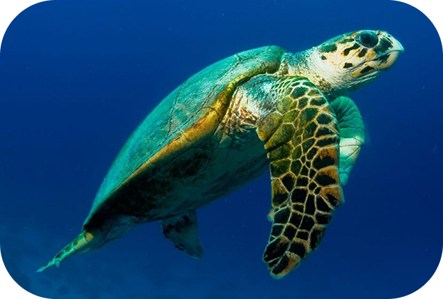
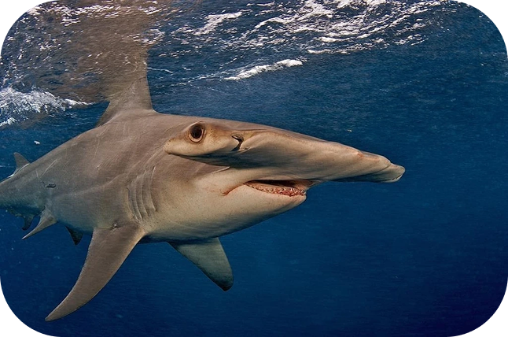
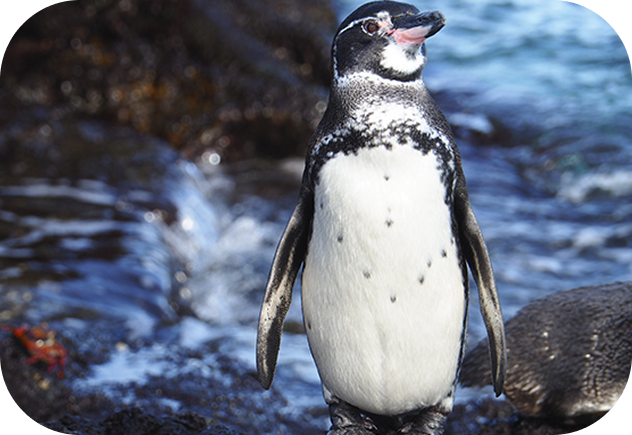
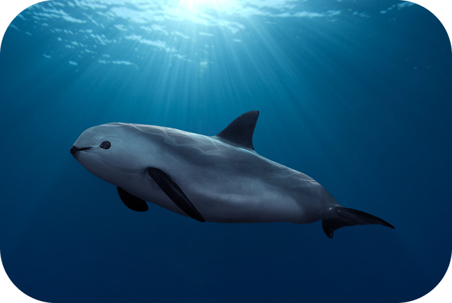

Nuestros océanos están en peligro
Los ecosistemas marinos enfrentan amenazas sin precedentes. Conocé los riesgos y descubrí cómo podés hacer la diferencia.
Contaminación
Cada año, más de 8 millones de toneladas de plástico terminan en el océano. Los derrames de petróleo, los microplásticos y los residuos químicos envenenan la cadena alimentaria marina.
Cambio climático
El aumento de la temperatura oceánica provoca el blanqueamiento de corales, la acidificación del agua y la alteración de las corrientes, afectando a miles de especies.
Sobrepesca
La pesca excesiva e insostenible ha reducido las poblaciones de muchas especies a niveles críticos, desequilibrando ecosistemas enteros.
Océanos en crisis
¿Cómo podemos ayudar?
- Reducí el uso de plásticos de un solo uso y participá en limpiezas de playas.
- Elegí productos del mar certificados como sustentables y evitá especies sobreexplotadas.
- Apoyá organizaciones que protegen los ecosistemas marinos y promueven áreas protegidas.
- Difundí información sobre la importancia de los océanos y educá a tu comunidad.
Datos que no podemos ignorar
Cifras reales que reflejan el estado crítico de nuestros océanos
La vida en riesgo

Tortuga carey
- En peligro crítico
- Pesca ilegal + destrucción de arrecifes

Tiburón martillo
- En peligro crítico
- Pesca intensiva (aletas)

Pingüino Galápagos
- En peligro
- Calentamiento del océano

Vaquita marina
- En peligro extremo
- Redes de pesca ilegales
El océano no puede esperar
Tu acción hoy define su futuro